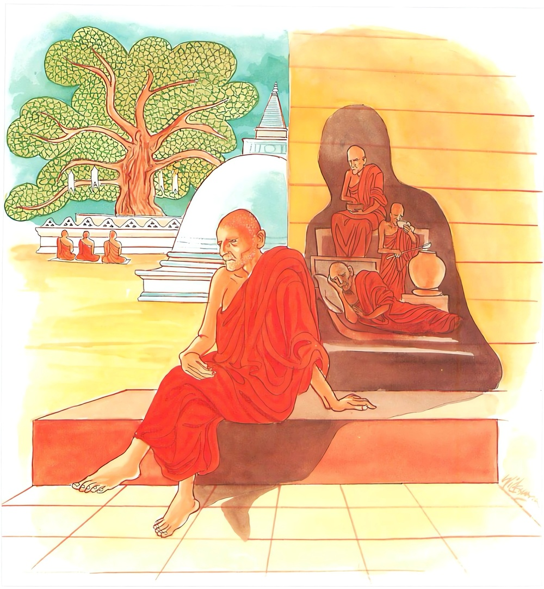

19-4 ලකුණ්ටක භද්දිය තෙරුන්ගේ කථා පුවත
මෙම කතාව සද්ධර්ම සාගරයෙන් ද කියවන්න.
න තෙන ථෙරො සො හොති යෙනස්ස පලිතං සිරො
පරිපක්කො වයො තස්ස මොඝජිණ්ණො’ති වුච්චති.
යම් වයෝවෘද්ධ කාරණයෙකින් ඔහුගේ හිස පලිත වේ ද (හිස නර ව යේ ද) (ඒ නර නැගි) කරුණින් හේ ස්ථවිර නම් නො වෙයි. ඔහුගේ වයස මුහුකළ බවට පැමිණියේ වෙයි. හේ (ඇතුළත ශීලාදී ස්ථවිර කරණ ධර්ම නැති හෙයින්) තුච්ඡ ජීර්ණ යැ යි කියනු ලැබේ.

යම්හි සච්චං ච ධම්මො ච අහිංසා සංයමො දමො
ස වෙ වන්තමලො ධීරො ථෙරො ඉති පවුච්චති.
යම් පුඟුලක්හු කෙරෙහි වනාහි (සොළොස් අයුරින් පිළිවිදුනා ලද) සත්යය ද (ප්රඥායෙන් පිළිවිදුනා ලද) නව ලොවුතුරා දහම් ද, අහිංසාව ද (හෙවත් මෛත්රී කරුණා මුදිතා උපේක්ෂා ද), කායවාක් සංයමය ද (හෙවත් පාතිමොක්ඛ සීලය ද) යන මේ ගුණ ඇද්ද, (රහත් මං නැණින්) වැමෑරු රාගාදී මල ඇති, ධෘතිසම්පන්න වූ ඒ මහණ තෙම (සස්නෙහි ස්ථවිර භාවය කරණ මේ ගුණවලින් යුක්ත බැවින්) ස්ථවිර යැ යි කියනු ලැබේ.
"නතෙන ථෙරො හොති” යන මේ ධර්මදේශනය ශාස්තෲන් වහන්සේ සැවැත්නුවර ජේතවනාරාමයේ වැඩසිටියදී ලකුණ්ටක භද්දිය තෙරුන් නිමිති කරගෙන දේශනා කළහ.
එක් දිනක් එම තෙරුන් බුදුන්ට උවටැන් කර ආපසු එන අතරදී තිහක් පමණ ආරණ්යක භික්ෂූන් වහන්සේ දකිමින්ම අවුත් බුදුන් වැඳ වාඩිවුහ. බුදුහු උන්වහන්සේලාගේ රහත් වීමේ හේතු සම්පත් දැක. මේ ප්රශ්නය ඇසුහ. මෙයින් පිටත්ව ගිය තෙරුන් වහන්සේ දැක්කෝද? නොදැක්කෙමු ස්වාමීනි. කවරෙක්වත් නොදුටුවේද? එක් සාමණේර නමක් දුටුවෙමු. මහණෙනි ඔහු සාමණේරයෙක් නොවේ. ඔහු ථෙරනමක්මය. ස්වාමීනි ඉතා කුඩාය. මහණෙනි මම මහළු වීම් පමණකින්, ථේර ආසනයේ වැඩිවී සිටීම නිසාම ථේරයයි. නොකියමි. යමෙක් සත්යය අවබෝධ කරගෙන මහජනයාට අහිංසක භාවයේ සිටි තැනැත්තා මේ තෙරුන් යයි පවසා මේ ගාථාව දෙසුහ.
කෙටික ඉදුනු පමණින් මහ තෙර නොවනු
අවිහිංසාව, තිර බව - ඉඳුරන් දැමුනු
සිව්සස් දමින් සංයමයෙන් සිත පිරුණු
උතුමානෝම "තෙර" නාමෙන් පිළි ගැණුනු
කෙස් පැසුන පමණින් තෙරනමක් නොවේ. මුහුකුරා ගිය වයස් ඇති. අඥාන මහල්ලායි කියනු ලැබේ.යමෙක් කෙරෙහි සත්යයද චතුරාර්ය ධර්මයද අවිහිංසාවද සඤ්ඤමහා දමනය වේද වමාරා දැමු කෙලෙස් ඇති ප්රාඥයා තෙරුන් යයි කියැවේ.
එහි පරිපක්ක - නම් දිරාගිය වෘද්ධම්සභාවයට පත්වූ යන අරුතයි. මොඝජිණ්ණ නම් ඇතුලත ථෙරකාරි ධර්මයන් නොමැති හෙයින් හිස් වෘද්ධයෙක්. පමණි යමහි සච්චඤච ධම්මො යයි පුද්ගලයන් කෙරෙහි සොළොස් ආකාරයෙන් අවබෝධ කරයක් නවවිධ ලෝකෝත්තර ධර්මය ඇති ද. අහිංසාති. හිංසා නොකරන ස්වභාවයයි. දේශනා මාත්රය පමණි. යම් කෙනෙක් කෙරෙහි චතුර්විධ නුවණින් අවබෝධකරගත් අප්ප මඤ්ඤා භාවනා ඇති. යන අර්ථයි. සඤ්ඤමො දැමුණු - යනු සීලයෙහි මෙන්ම ඉන්ද්රිය සංවරය අදහස් කෙරෙයි. වන්තමල නම් මාර්ග ඤාණයෙන් ඉවත් කළ කෙළෙස් ඇති යන්නයි. ධීර - නම් ධෛර්ය සම්පන්න බවයි. ථෙරො - ඔහු මේ තුරුණු ස්ථිරභාව කරනයෙන් යුක්ත හෙයින් "ථේර" නමින් හැඳින්වේ යන අර්ථයි. දෙසුම අවසන ඒ භික්ෂුහු රහත්වුහ.